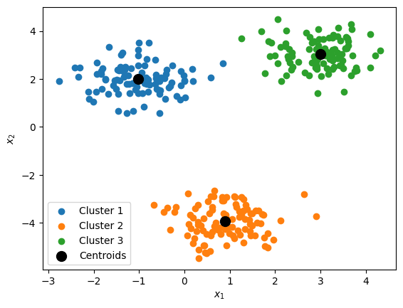
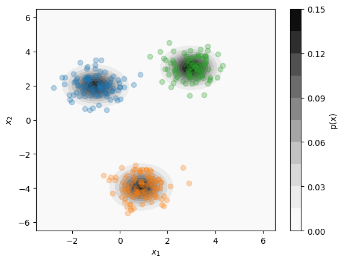
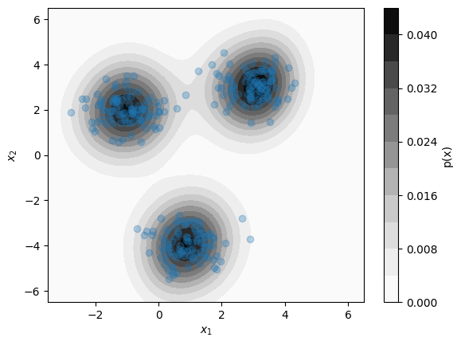

Clustering and Distribution Estimation#
The K-Means Algorithm#
One of the most popular algorithms for identifying clusters in data is the \(k\)-means algorithm. The \(k\)-means algorithm
Randomly select \(k\) points from the dataset as the initial centroid positions: \(\mathbf{c}_1, \mathbf{c}_2, ..., \mathbf{c}_k\).
Assign each point to the cluster with the nearest centroid.
For each cluster, set the centroid to be the mean of all assigned points.
If none of the cluster centroids moved, stop. Otherwise, repeat steps 2-4.
import numpy as np
def k_means(data_x, k, max_steps=10**7, centroids=None):
# initialize centroid positions (if not given):
if centroids is None:
centroids = np.array([
data_x[i]
for i in np.random.choice(len(data_x), size=k, replace=False)
])
# do a maximum of `max_steps` steps:
for _ in range(max_steps):
# assign all points to closest centroid:
assignments = np.array([
np.argmin(np.sum((x - centroids)**2,axis=1))
for x in data_x
])
# compute the location of new centroids:
new_centroids = np.array([
np.mean(data_x[assignments == n], axis=0)
for n in range(k)
])
# if new centroids are the same as before, stop:
if np.max(np.abs(new_centroids - centroids)) == 0:
return new_centroids, assignments
# otherwise, update centroids and do next step:
centroids = new_centroids
# if the maximum steps are reached, return centroids:
return centroids, assignments
import matplotlib.pyplot as plt
# initialize dataset with centers roughly at the following coordinates:
centers = np.array([ [3,3], [-1,2], [1,-4] ]).T
data_x = np.random.normal(centers.reshape(2,3,1),0.6,(2,3,100)).reshape(2,-1).T
Show code cell source
# set the initial centroid points:
# (modify these and see how the results change)
init_centroids = np.array([
[-2,0], [0.5,0], [3,0]
])
# find centroids for k=3 clusters:
centroids, assignments = \
k_means(data_x, k=3, centroids=init_centroids)
# display discovered centroids and clusters for k=3:
plt.figure()
for i in range(len(centroids)):
idx = (assignments == i)
plt.scatter(data_x[idx,0], data_x[idx,1], label=f'Cluster {i+1}')
plt.scatter(centroids[:,0], centroids[:,1], c='k', s=100, label='Centroids')
plt.xlabel(r'$x_1$')
plt.ylabel(r'$x_2$')
plt.legend()
plt.show()

Gaussian Mixture Model#
Show code cell source
from sklearn.mixture import GaussianMixture
# Fit a k=3 Gaussian mixture model to data:
gmm = GaussianMixture(n_components=3)
gmm.fit(data_x)
# assign points to clusters:
assignments = gmm.predict(data_x)
# define 2D mesh grid:
x1_pts = np.linspace(-3.5,6.5,100)
x2_pts = np.linspace(-6.5,6.5,100)
x1_mesh, x2_mesh = np.meshgrid(x1_pts, x2_pts)
x_mesh = np.vstack([x1_mesh.flatten(), x2_mesh.flatten()]).T
# evaluate gmm probability density on mesh points:
probs_mesh = gmm.score_samples(x_mesh).reshape(x1_mesh.shape)
# plot distribution:
plt.figure()
plt.contourf(x1_mesh, x2_mesh, np.exp(probs_mesh), levels=10, cmap='Greys')
plt.colorbar(label='p(x)')
for i in range(len(gmm.means_)):
idx = (assignments == i)
plt.scatter(data_x[idx,0], data_x[idx,1], label=f'Cluster {i+1}', alpha=0.3)
plt.xlabel(r'$x_1$')
plt.ylabel(r'$x_2$')
plt.show()

Kernel Density Estimation (KDE)#
Show code cell source
from scipy.stats import gaussian_kde
# fit a kde model to the data:
kde = gaussian_kde(data_x.T)
# define 2D mesh grid:
x1_pts = np.linspace(-3.5,6.5,100)
x2_pts = np.linspace(-6.5,6.5,100)
x1_mesh, x2_mesh = np.meshgrid(x1_pts, x2_pts)
x_mesh = np.vstack([x1_mesh.flatten(), x2_mesh.flatten()]).T
# evaluate kde probability density on mesh points:
prob_mesh = kde(x_mesh.T).reshape(x1_mesh.shape)
# plot distribution:
plt.figure()
plt.contourf(x1_mesh, x2_mesh, prob_mesh, levels=10, cmap='Greys')
plt.colorbar(label='p(x)')
plt.scatter(data_x[:,0], data_x[:,1], label=f'Dataset', alpha=0.3)
plt.xlabel(r'$x_1$')
plt.ylabel(r'$x_2$')
plt.show()
